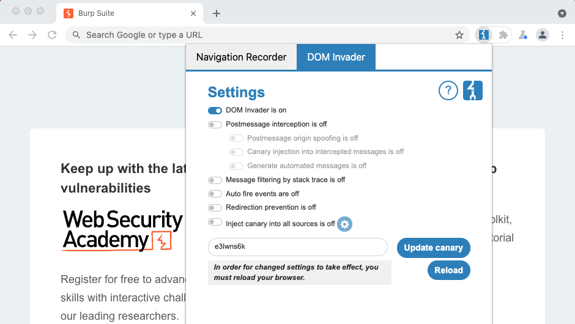

DOM Invader
DOM Invaderは、DOMベースのクロスサイトスクリプティング(DOM XSS)の脆弱性を、より迅速かつ簡単にテストできるようにするツールです。Burpのブラウザに、拡張機能としてプリインストールされています。
通常、DOM XSSを発見し悪用するには、圧縮された複雑なJavaScriptの検索など、手動で面倒な手順が必要です。DOM Invaderはこの大変な作業の多くを実行します。つまり興味深い挙動を数時間ではなく数秒で発見できます。
ブラウザのDevToolsパネルのDOM Invaderビューから、DOM Invaderのすべての機能にアクセスできます。
-
DOMビュータブには、ページ上にある制御可能なすべてのソースとシンクをほぼ瞬時に発見でき、クライアント側のコードを詳細に調査し、挿入したペイロードが実行される箇所を正確に把握するために役立つ機能があります。
-
Messageビュータブでは、ページ上で送信されたWebメッセージのキャプチャ、編集、再送信ができます。これはWebメッセージ用の、Burp ProxyとRepeaterに相当するようなツールです。独自に細工したメッセージを送信して、DOM Invaderに脆弱性を調査させることも可能です。
DOM Invaderの使用方法の概要は、PortSwiggerの研究者でDOM Invaderの作成者であるGareth Heyesによるビデオデモを参照してください。
DOM Invaderの有効化
DOM Invaderは、Burpのブラウザにプリインストールされていますが、その機能の一部が他のテストに影響を与える可能性があるため、デフォルトでは無効になっています。有効にするには、Burpのブラウザの右上隅にあるBurp Suiteアイコンをクリック(表示されない場合は、最初にジグソーパズルのアイコンをクリック)し、Burp Suitをクリックし、DOM Invaderタブに移動し、DOM Invader is on/offスイッチを切り替えます。次に変更を有効にするために、リロードボタンをクリックするよう求められます。

DOM Invaderを有効にした後、ブラウザのDevToolsパネルを開きます。これでDOM Invaderタブが表示されるでしょう。最高のエクスペリエンスを得るには、DevToolsパネルをブラウザウィンドウの下部への配置をお勧めします。
注
Burpで、ユーザオプション > 内蔵ブラウザ > 内蔵ブラウザに設定と履歴の保存を許可するオプションが有効な場合、DOM Invaderはオンかオフかも含め以前の設定を記憶します。DOM Invaderが有効な状態でBurpのブラウザを閉じた場合は、この点に注意してください。
DOM Invader設定
ブラウザの右上隅にあるBurp Suiteアイコンをクリックすると、DOM Invaderタブにいくつもの設定があり、さまざまなテストシナリオに合わせて動作を変更できます。
-
Postmessage interception: 有効にすると、DevToolsパネルのMessageビューで、サイトのWebメッセージング機能のDOM XSSをテストできます。Postmessage固有の設定がいくつかあり、動作を微調整できます。
-
Message filtering by stack trace: 一部のWebサイトで多数のメッセージをトリガーしますが、ノイズが多くなりテストが困難になる可能性があります。この設定を有効にすると、DOM Invaderは各エントリのスタックトレースを比較し、既存のエントリーと同じコード内の場所を指すエントリを非表示にします。
-
Auto fire events: 有効にするとDOM Invaderは、ページが読み込まれるとすぐ自動的に、すべてのエレメントでクリックやマウスオーバーイベントをトリガーします。これにより、挿入されたペイロードがこれらのイベントを必要とする場合に、自動的に実行されます。
-
Redirection prevention: 一部のアクションでは、操作によってDOMベースで他のページへのリダイレクトが発生する場合があります。するとDOM Invaderのビューがクリアされ、代わりに新しいページのソースとシンクで更新されるため、テストに支障をきたす可能性があります。この設定を有効にすると、DOM InvaderはDOMベースベースのリダイレクトをブロックし、同じページにとどまるようになります。ただし、
javascript: URLへのリダイレクト、またはInject canary into URLボタンによるリダイレクトは、引き続き通常通り動作します。
-
Inject canary into all sources: 有効にすると、ページ上で発見されたソースに対してDOM Invaderはカナリアを自動的に挿入します。各シンクにたどり着くソースを簡単に識別できるように、各ソースのカナリアに一意な文字列を追加します。これにより、サイトを閲覧するだけで脆弱性を発見できるため、時間を節約できます。一部のソースは、挿入するとサイトを適切に閲覧できなくなる可能性があるため、このオプションはデフォルトで無効になっています。この問題を避けるため、この設定のスイッチの横にある歯車のアイコンをクリックして、問題のあるソースの除外もできます。
-
Update canary: デフォルトで、DOM Invaderはランダムな英数字の文字列をカナリアに使用しますが、これを好きなカナリアに上書きもできます。これを有効にするには、カナリアを変更した後に、リロードボタンをクリックする必要があることに注意してください。